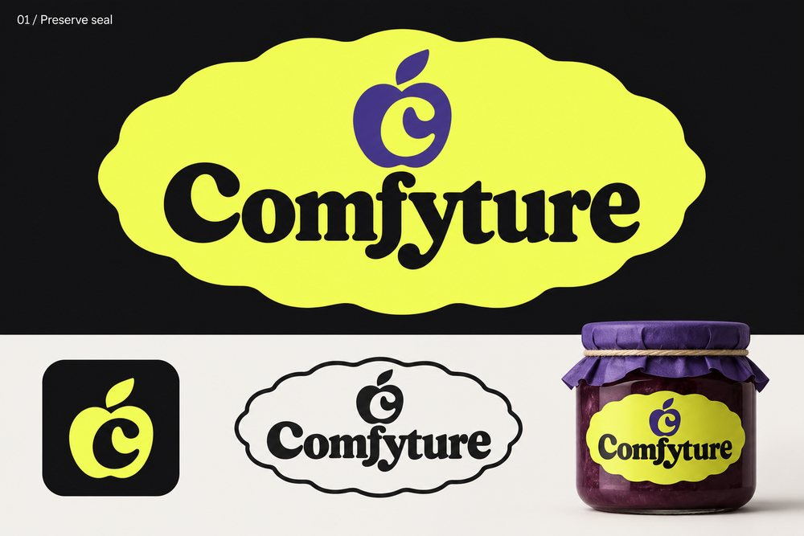
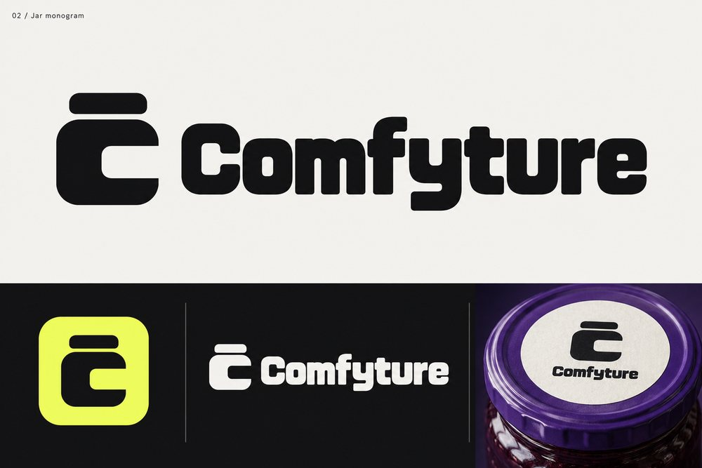
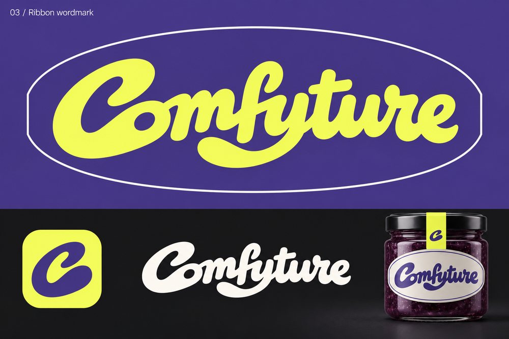
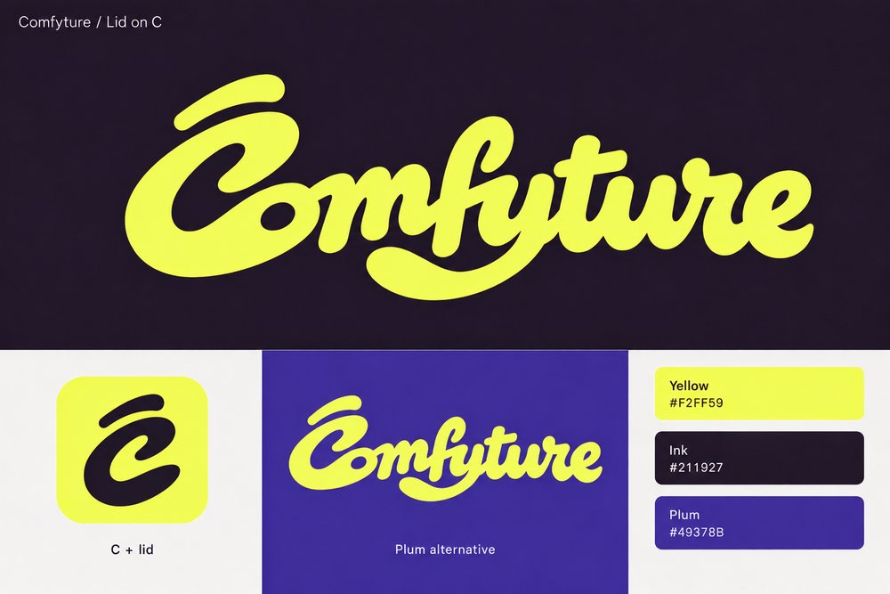

01 · Story
Comfy, plus a jar of jam
The name is a pun. In French, jam and preserves are confiture. Swap the con for com, the fi for fy, and you have Comfyture: a desk for making shots, named like something you put up in a jar and keep.
Comfy is for ComfyUI, the engine it runs on. -ture is for the jar: the thing that keeps a shot until you are ready to open it.
The brief was a jam label meets creative software: the warmth of a well-printed European preserve, drawn like a modern tool. The lid on the C is where the two meet.
The lid

the lidthe CThe first letter wears a fitted, curved jar lid that follows the upper contour of the C. It is a separate shape, a small gap away, so the C reads as a vessel and the lid as the thing you lift.
That is why the lid is never left out and never joined to the C: it is the one detail that says jar.
Colour, and where it came from
Comfyture is built on ComfyUI, so it keeps its lemon-yellow as the one accent: the same colour that lights “selected” and “go” in the app. On the jar it is the label.
The app’s dark panels carry over unchanged, so the brand and the product feel like one object. Ink is the warmer cousin used on pages and covers.
The only colour the product doesn’t have: the fruit. Used sparingly, as a second ground for the wordmark, never as a UI colour.
Comfyture is an independent, open-source project. It uses ComfyUI’s yellow as a nod to where it runs; it does not use, imitate or alter ComfyUI’s own logo.
How we got here · 16 Oct 2026



